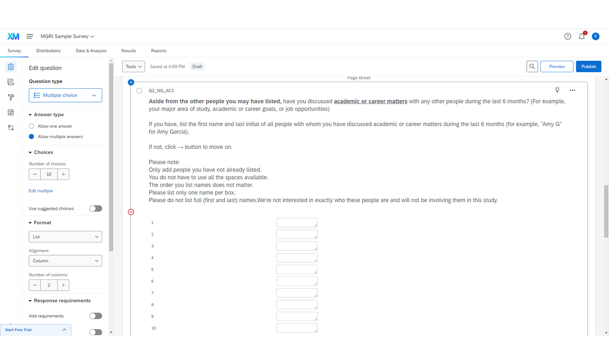

Implementing Survey in Qualtrics
Step 2: Creating Name Generators
Creating Q1_NG_IM1 and Q2_NG_AC1
Now, we are going to create name generators. Go back to "Builder" and create a question in the Name Generator block.

IM (Important Matters) name generator — Q1_NG_IM1
1
Set the question type as "Form field."
2
Set the number of fields (boxes) where respondents can list people's names.
Here, I made 10 boxes, but the number of boxes is dependent on your decision about how many blank spaces you'd like respondents to see on each page. For the NCA Project survey, we first provided 5 boxes and showed 5 more boxes if respondents filled all available boxes. Those who filled out all 10 boxes saw another (and the last) set of 5 boxes.
3
Write the question prompt.
Note
This name generator question will be referenced frequently in the following steps! I will refer to this generator question as the "IM (Important Matter) generator" or its question ID (Q1_NG_IM1).

AC (Academic & Career Matters) name generator — Q2_NG_AC1
This is the second name generator. Every part of this generator is the same as the previous one, except for the prompt.
Note
This name generator question will also be referenced frequently in the following steps! I will refer to this generator question as the "AC (Academic & Career Matter) generator" or Q2_NG_AC1.
Important
Make sure to add Page Breaks between every question in the survey.